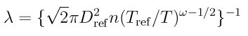

14.21. compute lambda/grid command¶
14.22. compute lambda/grid/kk command¶
Syntax:
compute ID lambda/grid nrho temp species extra
ID is documented in compute command
lambda/grid = style name of this compute command
nrho = compute or fix column for number density, prefaced by
c_orf_temp = NULL or compute or fix column for temperature, prefaced by
c_orf_species = species name used for reference properties
extra = kall or kx or ky or kz (optional)
kall = also calculate Knudsen number based on cell size in all dimensions kx = also calculate Knudsen number based on cell size in x dimension ky = also calculate Knudsen number based on cell size in y dimension kz = also calculate Knudsen number based on cell size in z dimension
Examples:
compute 1 lambda/grid c_GR[1] NULL Ar
compute 1 lambda/grid f_ave[2] f_ave[3] N2 kall
These commands will dump time averages for the mean free path for each grid cell to a dump file every 1000 steps:
compute 1 grid species nrho temp
fix 1 ave/grid 10 100 1000 c_1[*]
compute 2 lambda/grid f_1[1] f_1[2] Ar
dump 1 grid all 1000 tmp.grid id c_2
Description:
Define a computation that calculates the mean free path (lambda) between molecular collisions for each grid cell, based on the particles in that cell. Optionally, a Knudsen number for each cell can also be calculated, which is the mean free path divided by the cell size. These quantities can be useful for estimating the optimal grid cell size when adapting the grid, e.g. via the adapt_grid or fix adapt/grid commands.
Unlike other computes that calculate per grid cell values, this compute does not take a “group-ID” for a grid cell group as an argument, nor a particle mixture ID as an argument. This is because it uses the number density and temperature calculated by other computes or fixes as input, and those computes or fixes use grid group IDs or mixture IDs as part of their computations.
The results of this compute can be used by different commands in different ways. For example, the values can be output by the dump grid command.
The formula used to calculate the mean free path (lambda) is given in [Bird94] as equation 4.65:

This is an approximate mean free path for a multi-species mixture, suitable for estimating optimal grid cell sizes as explained above. It is a simplied version of formulas 4.76 and 4.77 from the same reference.
Dref and Tref and omega are collision properties for a reference species in the flow. The reference species is specified by the species argument. It must be a species defined by the species command and listed in the file of per-species collision properties read in by the collide command.
Specifically, Dref is the diameter of molecules of the species, Tref is the reference temperature, and omega is the viscosity temperature-dependence for the species.
In the formula above, n is the number density and T is the thermal temperature of particles in a grid cell. This compute does not calculate these quantities itself; instead it uses another compute or fix to perform the calculation. This is done by specifying the nrho and temp arguments like this:
c_ID = compute with ID that calculates nrho/temp as a vector output
c_ID[m] = compute with ID that calculates nrho/temp as its Mth column of array output
f_ID[m] = fix with ID that calculates a time-averaged nrho/temp as a vector output
f_ID[m] = fix with ID that calculates a time-averaged nrho/temp as its Mth column of array output
The temp argument can also be specified as NULL, which drops the (Tref/T) ratio term from the formula above. That is also effectively the case if the reference species defines omega = 1/2. In that case, the temp argument is ignored, whether it is NULL or not.
Note that if the value of n is 0.0 for a grid cell, its mean-free-path will be set to 1.0e20 (infinite length).
The compute_grid command can calculate a number density, using its nrho value. It can also calculate a temperature using its temp value. Note that this temperature is inferred from the translational kinetic energy of the particles, which is only appopriate for a mean free path calculation for systems with zero or small streaming velocities. For systems with streaming flow, an appropriate temperature can be calculated by the compute thermal/grid command. The formulas on its doc page show that the the center-of-mass velocity from the particles in each grid cell is subtracted from each particle’s velocity to yield a translational thermal velocity, from which a thermal temperature is calculated.
The fix ave/grid command can calculate the same values in a time-averaged sense, assuming it uses these same computes as input. Using this fix as input to this compute will thus yield less noisy values, due to the time averaging.
Note that the compute or fix (via the compute(s) it uses as input) can perform its number density or temperature calculation for a subset of the particles based on the “mixture” it uses. See the mixture command for how a set of species can be partitioned into groups.
IMPORTANT NOTE: If the ID of a fix ave/grid command is used as the nrho or temp argument, it only produces output on timesteps that are multiples of its Nfreq argument. Thus this compute can only be invoked on those timesteps. For example, if a dump grid command invokes this compute to write values to a dump file, it must do so on timesteps that are multiples of Nfreq.
One of the kall or kx or ky or kz extra arguments can be optionally appended. If specified, this calculates an additional value per grid cell, namely the dimensionless Knudsen number which is the ratio of the mean free path to the cell size. For kall, the cell size is taken to be the average of the three grid cell side lengths (or two cell lengths for a 2d simulation). For kx, ky, or kz, the cell size is the single cell side length in the corresponding x,y,z dimension.
Output info:
This compute calculates a per-grid vector or array. If one of kall, kx, ky, or kz is not specified, then it is a vector. If one extra argument is specified, it is an array with two columns. The vector or first column of the array is the mean free path; the second column is the Knudsen number.
This compute performs calculations for all flavors of child grid cells in the simulation, which includes unsplit, cut, split, and sub cells. See Section 6.8 of the manual gives details of how SPARTA defines child, unsplit, split, and sub cells. Note that cells inside closed surfaces contain no particles. These could be unsplit or cut cells (if they have zero flow volume). Both of these kinds of cells will compute a zero result for all the individual values. Likewise, split cells store no particles and will produce a zero result. This is because their sub-cells actually contain the particles that are geometrically inside the split cell.
The vector or array can be accessed by any command that uses per-grid values from a compute as input. See Section 4.4 for an overview of SPARTA output options.
The per-grid array values for the vector or first column of the array will be in distance units. The second column of the array will be dimensionless.
Styles with a kk suffix are functionally the same as the corresponding style without the suffix. They have been optimized to run faster, depending on your available hardware, as discussed in the Accelerating SPARTA section of the manual. The accelerated styles take the same arguments and should produce the same results, except for different random number, round-off and precision issues.
These accelerated styles are part of the KOKKOS package. They are only enabled if SPARTA was built with that package. See the Making SPARTA section for more info.
You can specify the accelerated styles explicitly in your input script by including their suffix, or you can use the -suffix command-line switch when you invoke SPARTA, or you can use the suffix command in your input script.
See the Accelerating SPARTA section of the manual for more instructions on how to use the accelerated styles effectively.
Restrictions:
To use this compute, a collision style must be defined via the collide command, which defines properties for the reference species.
As explained above, to use this compute with nrho or temp defined as input from a fix ave/grid command, this compute must only be invoked on timesteps that are multiples of the Nfreq argument used by the fix, since those are the steps when it produces output.
Related commands:
compute grid command, compute thermal/grid command, fix ave/grid command, dump grid
Default: none